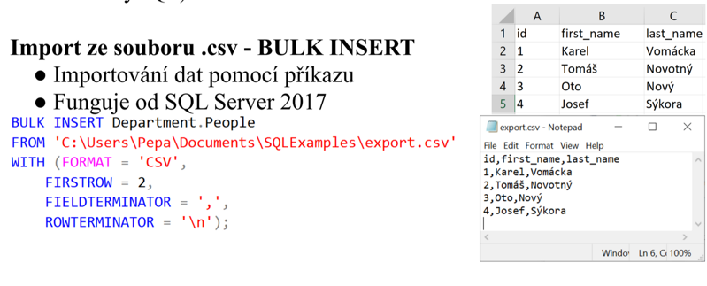
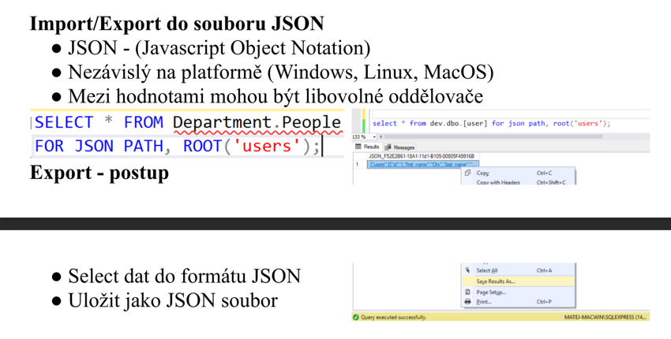
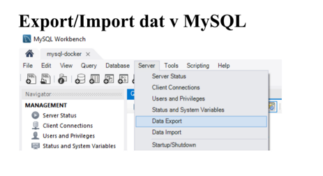

Export-import-dat-z-databaze
Otázky
co je to import
co je to export
způsoby importu/exportu
ukaž oboje v jednom z 3 DBMS --> Oracle, MySQL, MSSQL
Import dat
můžeme importovat pomocí příkazu nebo uživatelského rozhraní
zmenšuje chybovost
Data je nutné před importem upravit
zkontrolovat integritní omezení, rozsah a format
volba vhodneho typu souboru pro import v závislosti na to kam importujeme. Do MSSQL nelze importovat JSON ale jde CSV tak musíme soubor převést
Import dat pomocí wizardu
podporované soubory :
MSSQL - CSV, SQL, access
MySQL - CSV, JSON - nepodporuje microsoft fomaty
Oracle - CSV, XML... - volí se ještě encode souboru
import pomocí příkazu v MSSQL :

Export dat
můžeme exportovat pomocí příkazu nebo uživatelského rozhraní
slouží pro rychlé získání dat v přehledné formě
podporované soubory :
MSSQL - CSV, XSL, JSON, XML, HTML, PDF
 
Sum-up
Import
naplnění db konzistentními daty
je nutné je upravit --> integrita/normalizace
vhodný typ souboru
Export
příkaz nebo UI
rychlé získání dat v přehledné formě